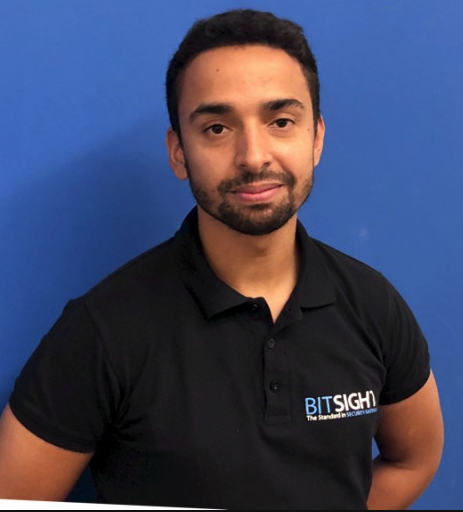

Ruben Abreu
Full Stack Web Developer (in the making)
Summary
Professional and student with a diversified and continuous search for
knowledge. Currently taking a Professional Full Stack Web Development
course in FLAG while working at Bisight - a cyber risk management leader
company.
Work Experience
-
Senior Technical Support Analyst
Aug 2021 - Present
-
Similar responsibilities as described for Technical Support Analyst
and also:
- Help define new or improve existing processes and policies
- Be an escalation point/”go to” person for questions
- Mentor Technical Support Analysts
-
Contribute with content to new hire training for Technical Support
Analysts
-
Review Confluence and Knowledge Base articles related with tasks
-
Able to have/suggest customer calls whenever is required and
without help/backup.
-
Able to handle more difficult/complex Diligence record tickets and
Compromised Systems/User Behavior tickets.
-
Technical Support Analyst
Jun 2018 - Aug 2021
-
Address product and technical questions via email and occasionally
on customer calls, regarding BitSight's suite of products.
- Company network and infrastructure analysis and verification.
- Research teamwork management and orientation.
-
Providing support and guidance for external and internal company
teams.
-
Help build internal support knowledge/tools and suggest changes to
policies and process.
Skills
- HTML5
- CSS 3
- SQL
- Customer Service
- Portuguese and English.
Certifications and other achievments
- The Python Bible
- Getting Started with Technology: Think Like an Engineer
- Complete Cisco CCNA 200-301 Course (40 hours)
- The Complete SSL and TLS Guide: HTTP to HTTPS
- The Complete Google Sheets
- Practical SQL Skills